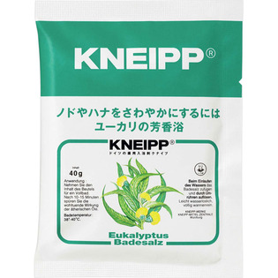

返回列表
产品名称：クナイプバスソルト ユーカリ

クナイプ・ジャパン クナイプバスソルト ユーカリ ４０ｇ
メーカー クナイプ・ジャパン
JANコード 4580294850209
商品の特徴
ノドやハナをさわやかにするにはユーカリの芳香浴
- 成分・分量
- 塩化Na、ユーカリ油、炭酸Na、ラウリン酸POE（20）ソルビタン、オレオイルメチルタウリンNaPOE（カプリル・カプリン酸）グリセリル、ビサボロール、緑401、水
- 用法及び用量
- 浴そうのお湯（約200mL）にバスソルト1包（40g）をよくかきまぜながら溶かして入浴してください。